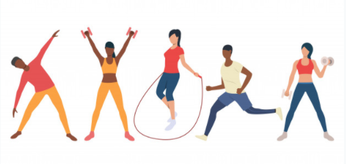

Read the information about skeletal muscle, after that answer the activity. If there is a word you don't understand, you can look it up here.
|
Physical activity induces significant structural and metabolic changes in skeletal muscle, according to the type of exercise performed. In relation to the exercise-type specificity, different molecular pathways are activated causing muscle hypertrophy and its adaptation. The endurance exercise (aerobic) involves the work of a large number of muscle bundles and is a type of prolonged physical activity, without developing too much fatigue. Endurance exercise usually includes walking, running, swimming, cycling, and some team sports. Endurance excercise enhances protein synthesis, mitochondrial biogenesis and the release of interleukin-6 (IL-6), resulting in inhibition of tumor necrosis factor-α (TNF-α) production and consequent inhibition of muscle fiber apoptosis; it also may mediate anti-inflammatory and anti-atrophy effects. However, endurance training is not associated to hypertrophy. The resistance excercise (anaerobic and strenght) is a type of physical activity that generates great muscular strenght and induces hypertrophy of skeletal muscle fibers as a result of the confluence of positive muscle protein balance and satellite cell addition muscle fibers. Hypertrophic muscle fibers have greater dimensions as a result of increased protein synthesis exceeding the protein catabolism. Resistance training induces activation of satellite cells, whereby the number of muscle fibers also increases. It is important to remember that physical exercise can cause an increase in oxidative stress with production of reactive oxygen species (ROS) that often cause cellular alterations. However, at the same time, it stimulates the adaptive response of the body against oxidative stress, increasing the production of heat shock proteins (HSPs) in order to protect against subsequent periods of stress damage and to facilitate a rapid recovery and remodeling when damage occurs. Moreover, it seems that when physical exercise is supported with a good quality of nutrition or with supplementation of exogenous antioxidants, it promotes the adaptation of cell antioxidant defense system much better, achieving an optimal level of defense.  |